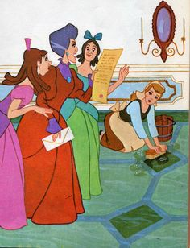

Once upon a time, there was a beautiful girl named Cinderella.
When she was very young, her mother died of an illness.
Later, her father married a widow with two daughters.
Thus, Cinderella had a stepmother and two stepsisters.
One day, poor cinderella's father passed away too.
From that day onwards, her stepmother became very cruel to her.
She made Cinderella do all the household work.
The stepmother and stepsisters did not do anything!
One day, the King decided to hold a ball for his son.
His son will choose a bride for himself there.
The invitation for the ball were sent out to all the unmaried girls including the stepsisters.
They were very excited.
Cinderella also was very excited.
She asked her stepmother, "Can I also go to the ball?"
Her stepmother then gave her a very mean look and said ,"No! how can you even think of going there?
When her stepmother and stepsisters left to the King's Palace, Cinderella felt very sad and cried alone in the hause.
Suddenly, there was a flash of light and a woman appeared.
She said, "I am your Fairy Godmather. I come to make your wish come true. You will go to the Ball my dear."
Cinderella feel very happy to hear this.
The Fairy Godmother waved her magic wand, then suddenly there appeared a beautiful party dress and a pair of glass slippers!
The Fairy Godmother also turned a pumpkin into a carriage and two mice into horses!
However, the Fairy Godmother have warned Cinderella, "Remember to return before midnight."
Then, Cinderella went to the palace.
The prince was greeting his guests when he noticed a beautiful girl in a corner.
It was Cinderella.
She looked extremely beautiful.
The Prince could not take his eyes off her and asked her for a dance.
He danced only with her throughout the Ball.
For Cinderella, it was a dream come true
She had never been so happy in her life.
She almost forgot about the hard times she had with her stepmother and stepsisters.
Suddenly Cinderella realised that it was almost midnight.
Time to go girl, she tought.
So, off she ran to her carriage leaving the Prince in a daze.
The prince rushed after Cinderella but she did not stop.
One of her glass slippers fell of on the steps before she left in her carriage.
The Prince picked the glass slipper.
He said, "The girl whose foot fits this slipper will be the one I marry."
The King's attendants were sent to every house.
Many girls tried wearing the slipper but all of the failed.
Her stepsisters eagerly tried the slipper.
But their feet were too big for the glass slipper!
Finally Cinderella tried the glass slipper.
It fitted her foot perfectly
The Prince asked Cinderella to marry him and she happily agreed.
Grand celebrations were arranged for the wedding.
Soon the Prince and Cinderella got married.
They lived happily ever after!
Never stop believing in your dreams.